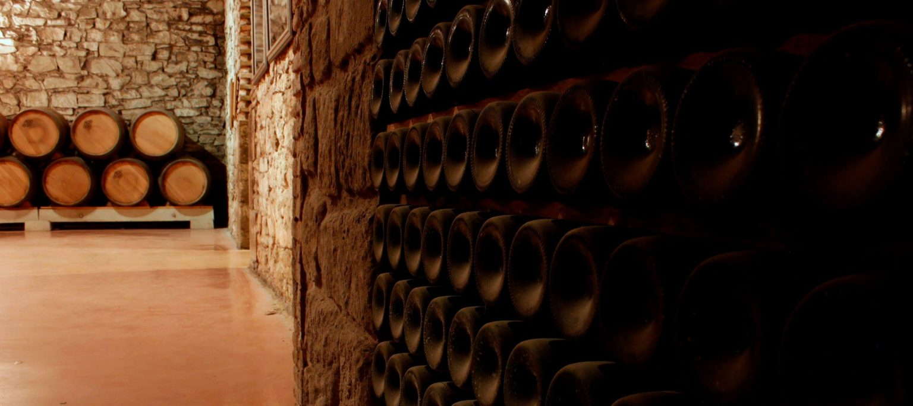

Crianza del vino
La crianza de vinos se define como un proceso de envejecimiento y maduración de un vino para conseguir los mejores aromas y matices, ya sea en barricas, en depósitos o en la propia botella. Como ya sabrás, el vino evoluciona con el tiempo y es esencial aprovechar dicha transformación para conducir a una mejora continua durante el ciclo de vida del vino. Estos cambios se producen principalmente por reacciones químicas y/u oxidativas y por alteraciones físicas y/o biológicas en el vino, que tienen lugar durante la elaboración del mismo.
Es importante resaltar que no todos los vinos sirven para la crianza, sino que deben utilizarse aquellos que puedan evolucionar bien durante un determinado periodo de tiempo. Esto dependerá del tipo de uva, de su calidad ese año y del tipo de elaboración que haya recibido el vino. Habitualmente se crían aquellos que tienen suficiente cantidad de taninos, acidez, cuerpo, extracto seco, grado alcohólico y poca tendencia a la oxidación.
En la crianza tradicional el vino permanece en barricas de roble y se complementa con un periodo de reposo en botella. Por tanto la crianza de un vino es la suma de periodo en barrica y su periodo en botella, y no solo de su periodo en barrica como habitualmente se tiende a desvirtuar.
CRIANZA = TIEMPO EN DEPÓSITO + TIEMPO EN BOTELLA
Esta crianza no es exclusiva de los vinos tintos; hay algunos blancos que evolucionan muy bien en recipientes de madera, como los elaborados con las variedades Chardonnay, Verdejo o Macabeo. Estos vinos blancos con crianza, al no ser sometidos a maceración y por tanto no contener tantos taninos como los tintos, se ven muy afectados por la oxidación, por lo que es preferible que primero fermenten directamente en barrica y que se críen posteriormente en ella tras la fermentación.
A cotinuacion les dejamos un corto video donde enseñamos paso a paso el proceso de la crianza:
Ahora que conocemos un poco mejor las características de los vinos Crianza, seguro que sabremos disfrutar de todos estos matices con mayor profundidad.